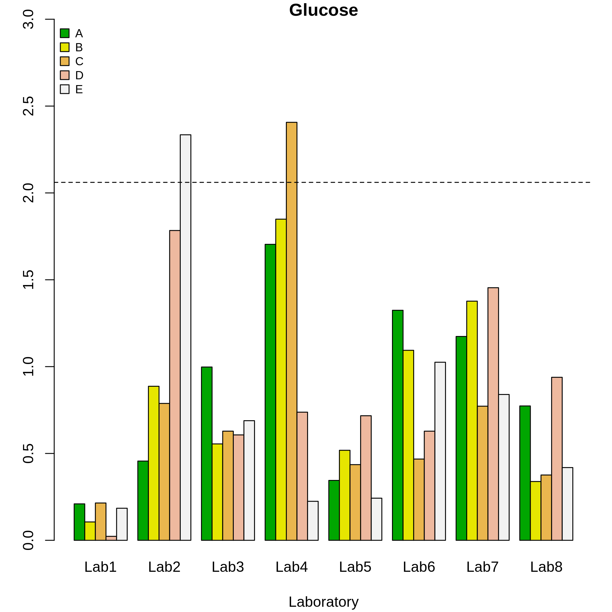
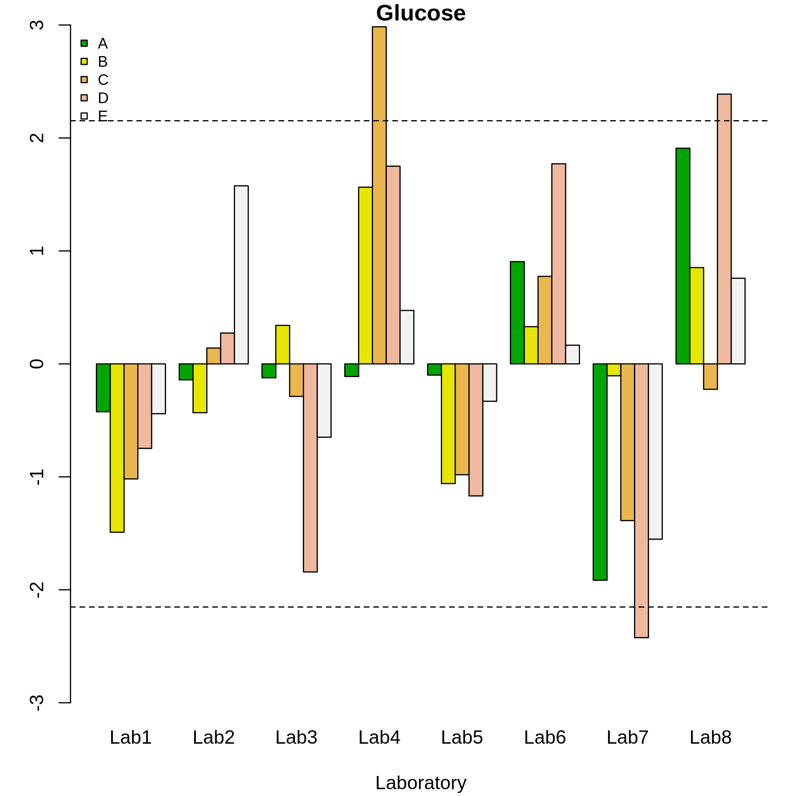

2. Standard Approach
The ILS package provides two groups of functions made to detect outlying individual results (outlying replicates) and outlying laboratories: both for the scalar and the functional cases (Table 1). The ILS package offers graphical and analytical procedures (statistical hypothesis test) for this purpose.
| Technique | Function | Description | |
|---|---|---|---|
| Scalar | Plot | h.qcs, k.qcs |
Mander’s \(h\) and \(k\) statistics |
| approach | Test | test.cochran |
Cochran test |
test.grubbs |
Grubbs test | ||
lab.aov |
ANOVA | ||
| Funtional | Plot | h.fqcs, k.fqcs |
Mandel’s \(H(x)\) y \(K(x)\) functional statistics |
| approach | Test | mandel.fqcs |
Mandel’s functional test |
As above mentioned, among the methodologies used to evaluate the consistency of laboratory results, we must highlight the r&R studies, which quantify the variability between laboratories (reproducibility) and variability between results (repeatability). The repeatability is the variability between the results of the independent tests obtained for each individual laboratory, i.e. the evaluation of the variability produced by the measurement system since the results are obtained by a single operator in each laboratory and in a short interval of time. On the other hand, the reproducibility refers to the variability between the re- sults of individual tests obtained in different laboratories, allowing to determine the bias.
Accordingly with the repeatability and reproducibility concepts, Mandel’s \(h\) and \(k\) statistics are used in ILS to detect laboratories that provide inconsistent results. The h statistic explains the variability between the laboratories, that is, estimates the bias, which is the difference of the means of each laboratory with respect to the global mean, while the k statistic estimates the variability within the laboratories, comparing the repeatability corresponding to each laboratory. The decision rule for detecting whether a laboratory is inconsistent is based on the comparison between the value of the \(h\) or \(k\) statistic and the critical value calculated with a significance level of \(0.5%\), which is the one recommended by ASTM E-691.
On the other hand, the ILS package performs the Cochran test to examine the consistency within a laboratory, whereas the Grubbs test is commonly used to examine consistency between laboratories. The Grubbs test can also be used as a consistency test for the results obtained in a laboratory using identical materials. These tests are recommended by ISO 5725-2.
2.1. Consistency tests
The basic statistical model proposed on ISO 5725-2 that estimate the accuracy and precision of an analytical method is:
\[\begin{equation} y = m + B + \epsilon (1) \end{equation}\]
Where \(m\) is the general mean for the material under analysis, \(B\) is the laboratory bias component under repeatability conditions, and \(\epsilon\) is the random error occurring in each measure under repeatability conditions. The repeatability variance \(\sigma_r^2\) is estimated by \(S_r^2\), which is the within-laboratory variance. On the other hand, the between-laboratory variance \(\sigma_B^2\) is estimated by \(S_B^2\), this variance is related to laboratory bias. The reproducibility variance \(\sigma_r^2\) is given by:
\[\begin{equation} \sigma_R^2=\sigma_r^2+\sigma_B^2 \end{equation}\]
Using the ILS package, one-way ANOVA analysis and mean comparison test can be performed. However, laboratories that present non-consistent results should be excluded from the ILS in advance. Accordingly, consistency tests and identidication of atypical results must be performed in advance of ANOVA analysis.
| Source | Mean squares | Estimate of |
|---|---|---|
| Laboratory | \(MS_B=\frac{\displaystyle\sum_{i=1}^L n_i(\bar{y}_i-(\bar{y})^2)}{(L-1)}, \hspace{0.1cm}S_B^2=\frac{MS_B-MS_r}{\bar{n}}\) | \(\sigma_r^2+\bar{n}\sigma_B^2\) |
| Residual = repeatibility | \(MS_r=\frac{\displaystyle\sum_{i=1}^L\displaystyle\sum_{j=1}^{n_i} (y_{ij}-\bar{y}_i)}{(N-L)}, \hspace{0.1cm}d.f.=(N-L)\) | \(\sigma_r^2\) |
In Table(2), the one-way ANOVA approach results are shown, with
\[\begin{equation} \bar{n}=\frac{1}{L-1}\left(\displaystyle\sum_{i=1}^L n_i-\frac{\displaystyle\sum_{i=1}^L n_i^2}{\displaystyle\sum_{i=1}^L n_i}\right), \hspace{0.1cm} \mbox{and} \hspace{0.1cm}N=\displaystyle\sum_{i=1}^L n_i. \hspace{0.1cm}\mbox{If}\hspace{0.1cm}S_B^2\leq 0, \mbox{set}\hspace{0.1cm}S_B^2=0 \end{equation}\]
There are two possible scenarios in which the presence of outliers can be evaluated: the first is that the results of one laboratory deviates from the others in terms of precision, that is, when the measurements made by a laboratory differ signficantly with respect to the measurements obtained by other laboratories. The second scenario is related with the identification of outliers in a laboratory for a certain level. The statistics and tests recommended by ISO 5725-2 and ASTM E-691 are described below.
2.1.1. Mandel’s h statistic and Grubbs test
Let \((x_1, x_2,\ldots, x_L)\) a sample of \(L\) observations. The \(x_l; l = 1, \ldots,L\) are modelled as realizations of random variables \(X_l; l = 1, \ldots,L\) being identically and independently distributed according to the normal distribution \(N(\mu, \sigma^2)\). We denote:
\[\begin{equation} \bar{X}=\frac{\displaystyle\sum_{l=1}^L X_l}{L} \end{equation}\]
as the mean of the \(X_l\),
\[\begin{equation} S^2=\frac{1}{L-1}\displaystyle\sum_{l=1}^L (X_l-\bar{X})^2 \end{equation}\]
as the sample variance of the \(X_l\).
Mandel’s h statistic is defined by:
\[\begin{equation} H_l=\frac{X_l-\bar{X}}{S};\hspace{0.1cm} l=1,\ldots,L \end{equation}\]
Which has the same distribution for all \(l = 1, \ldots ,L\). The critical value is:
\[\begin{equation} h_{l;1-\frac{\alpha}{2}}=\frac{(L-1)t_{L-2;1-\frac{\alpha}{2}}}{\sqrt{L\left(t_{L-2;1-\frac{\alpha}{2}}^2+L-2\right)}};\hspace{0.1cm} l=1,\ldots,L \end{equation}\]
Whereby \(t_{L-2;1-\frac{\alpha}{2}}\) is the \(\left(1-\frac{\alpha}{2}\right)\) quantile of the \(t\) distribution with \(v = L−2\) degrees of freedom.
For the case defined by \(L\) laboratories that obtain n replicates each one, the \(h\) statistic is defined by:
\[\begin{equation} h_{l}=\frac{d_l}{S_{\bar{x}}}=\frac{\bar{x}_l-m}{\sqrt{\displaystyle\sum_{l=1}^L \frac{(\bar{x}_l-m)^2}{L-1}}};l=1,\ldots,L \end{equation}\]
Whereby \(\bar{x}_l\) is the mean of the n results of each laboratory, and \(m\) is the global mean of the results of the \(L\) laboratories.
A laboratory is detected as inconsistent when the value of the statistic \(h_l\) is greater than the critical value, i.e. when \(h_l\geq h_{l;1-\frac{\alpha}{2}}\).
On the other hand, if we want to determine if the observation \(X_{max} = max(X_1,\ldots,X_n)\) is an outlier, the Grubbs test is used. The statistic corresponding to this test is defined by the following expression:
\[\begin{equation} G=\displaystyle\max_{i=1,\ldots,n}H_i=\displaystyle\max_{i=1,\ldots,n} \frac{X_i-\bar{X}}{S}=\frac{X_{max}-\bar{X}}{S} \end{equation}\]
If we want to determine if the smallest observation \(X_min = min(X_1,\ldots,Xn)\) is an outlier, the test statistic is:
\[\begin{equation} G=\displaystyle\max_{i=1,\ldots,n}-H_i=\displaystyle\max_{i=1,\ldots,n} \frac{X_i-\bar{X}}{S}=\frac{X_{min}-\bar{X}}{S} \end{equation}\]
The critical value for this test is defined by:
\[\begin{equation} g_{n;1-\alpha}\approx \frac{(n-1)t_{n-2;1-\frac{\alpha}{2}}}{\sqrt{n\left(n-2+t_{n-2;1-\frac{\alpha}{2}^2}\right)}} \end{equation}\]
For the special problem where there are \(L\) laboratories and n replicates obtained for each one, the statistic \(g_{L;1-\alpha}\)is defined. In this case, the observations must be replaced by the means of the results corresponding to each laboratory, whereas the mean of the observations is also replaced by the global mean obtained as the mean of laboratories mean.
If a laboratory is identified as an outlier, after applying the \(h\) statistic and the Grubbs test to different levels within a laboratory, this is an evidence of the presence of a laboratory high bias (due to a high systematic error in calibration, or errors in the equations when the results were computed).
2.1.2. Mandel’s k statistic and Cochran test
Let \((S_1^2, S_2^2,\ldots, S_L^2)\) be a series of \(L\) sample variances with each one based on \(n\) observed values. Under the assumption that the observed values \(X_{ij}: j=1,2,\ldots,L; ~ i=1,2,\ldots,n\) are realizations of random variables \(X_{ij}\) identically and independently distributed according to a normal distribution \(N(\mu_i, \sigma^2)\) for each \(j\), the sample variances \(S_j^2: j = 1,\ldots,L\) divided by their expectation \(\sigma^2\) follow a \(\chi^2/v\) with \(v = n − 1\) degrees of freedom. Mandel’s k statistic is defined by:
\[\begin{equation} k_l=\frac{S_l}{\sqrt{\bar{S}^2}}: j=1,2,\ldots,L \end{equation}\]
with
\[\begin{equation} \bar{S}^2=\frac{\displaystyle\sum_{l=1}^L S_l^2}{L} \end{equation}\]
with the same distribution for all \(l = 1,\ldots,L\). The critical value is:
\[\begin{equation} k_{l,n;1-\alpha}=\sqrt{\frac{L}{\left(1+\frac{L-1}{F_{v_1,v_2;\alpha}}\right)}} \end{equation}\]
Where \(F_{v_1,v_2;\alpha}\) is the \(\alpha\)-quantile of the distribution \(F\) with \(v_1 = (L − 1)(n − 1)\) and \(v_2 = n − 1\) degrees of freedom.
When \(L\) laboratories with \(n\) replicates are studied, the \(k\) statistic is defined by:
\[\begin{equation} k_{l}=\frac{S_l}{S_r}=\frac{\sqrt{\displaystyle\sum_{l=1}^L \frac{(x_l-\bar{x})^2}{n-1}}}{\sqrt{\frac{\displaystyle\sum_{l=1}^L S_l}{L}}} \end{equation}\]
Where \(S_l\) is the standard deviation of the replicates of each laboratory for a given material. A laboratory is detected as inconsistent when the value of the statistic \(k\) is greater than the critical value, this is, \(k_l \geq k_{l,n;1−\alpha}\).
On the other hand, to determine if the highest variance \(S_{max}^2=\max(S_1^2,S_2^2,\ldots,S_L^2)\) is an outlier, we used the Cochran test:
\[\begin{equation} C=\frac{S_{max}^2}{\displaystyle\sum_{j=1}^L S_j^2}=\frac{1}{L}\max_{i=1,\ldots,L}\frac{S_j^2}{\bar{S}^2} \end{equation}\]
For this test, the critical value, follows the expression:
\[\begin{equation} c_{l,n:1-\alpha}\approx\frac{1}{\left(1-(L-1)F_{v_1,v_2;\frac{\alpha}{L}}\right)} \end{equation}\]
Where \(F_{v_1,v_2;\frac{\alpha}{L}}\) is the \(\frac{\alpha}{L}\)-quantil of the \(F\) distribution with \(v_1 = (L − 1)(n − 1)\) and \(v_2 = n − 1\) degrees of freedom.
The Cochran test is a one tail test for outliers, because it only evaluates the highest value in a series of variances. If a laboratory is detected as an outlier, using the k statistic or with the Cochran test, this indicates that the variance within the laboratory is high (due to lack of familiarity with the analytical method, differences of appreciation among operators, inadequate equipment, equipment in poor state, or careless execution), in which case, the total of results collected by this laboratory, should be rejected and taken out of the study.
The detection of inconsistent laboratories must be repeated until laboratories stop reporting outliers. However, the consistency tests should be used with caution, because if this process is carried out in excess, could lead to false outlier identification.
2.2. ILS: Glucose study
In this section, we will use the qcdata and qcstat objects lab.qcdata() and lab.qcs() created in subsection 2.1 from the Glucose dataset. First, an analysis of the variability for each laboratory will be performed. For this purpose, the k statistic (k.qcs()) and the Cocharn test (cochran.test()) will be used to identify if there is any laboratory with non-consistent results. Subsequently, the h statistic (h.qcs()) and the Grubbs test (grubbs.test()) will be used to perform an analysis to evaluate inter-laboratory variability.
The following statements creates a k.qcs() object and the corresponding graph for the \(k\) statistics for each laboratory and material (see Figure 5).
library(ILS)
#> Loading required package: lattice
#> Loading required package: multcomp
#> Loading required package: mvtnorm
#> Loading required package: survival
#> Loading required package: TH.data
#> Loading required package: MASS
#>
#> Attaching package: 'TH.data'
#> The following object is masked from 'package:MASS':
#>
#> geyser
#> Loading required package: depthTools
#> Loading required package: fda.usc
#> Loading required package: fda
#> Loading required package: splines
#> Loading required package: fds
#> Loading required package: rainbow
#> Loading required package: pcaPP
#> Loading required package: RCurl
#> Loading required package: deSolve
#>
#> Attaching package: 'fda'
#> The following object is masked from 'package:lattice':
#>
#> melanoma
#> The following object is masked from 'package:graphics':
#>
#> matplot
#> Loading required package: mgcv
#> Loading required package: nlme
#> This is mgcv 1.8-40. For overview type 'help("mgcv-package")'.
#> ----------------------------------------------------------------------------------
#> Functional Data Analysis and Utilities for Statistical Computing
#> fda.usc version 2.0.2 (built on 2020-02-17) is now loaded
#> fda.usc is running sequentially usign foreach package
#> Please, execute ops.fda.usc() once to run in local parallel mode
#> Deprecated functions: min.basis, min.np, anova.hetero, anova.onefactor, anova.RPm
#> New functions: optim.basis, optim.np, fanova.hetero, fanova.onefactor, fanova.RPm
#> ----------------------------------------------------------------------------------
#>
#> Package ILS: Interlaboratory Study
#> version 0.2 (built on 2018-03-06).
#> Copyright Miguel A. Flores Sanchez 2016.
#>
#> Attaching package: 'ILS'
#> The following object is masked from 'package:nlme':
#>
#> Glucose
data("Glucose", package = "ILS")
qcdata <- lab.qcdata(Glucose)
k <- k.qcs(qcdata, alpha = 0.005)
plot(k)
summary(k)
#>
#> Number of laboratories: 8
#> Number of materials: 5
#> Number of replicate: 3
#> Critical value: 2.06084
#> Beyond limits of control:
#> A B C D E
#> Lab1 TRUE TRUE TRUE TRUE TRUE
#> Lab2 TRUE TRUE TRUE TRUE FALSE
#> Lab3 TRUE TRUE TRUE TRUE TRUE
#> Lab4 TRUE TRUE FALSE TRUE TRUE
#> Lab5 TRUE TRUE TRUE TRUE TRUE
#> Lab6 TRUE TRUE TRUE TRUE TRUE
#> Lab7 TRUE TRUE TRUE TRUE TRUE
#> Lab8 TRUE TRUE TRUE TRUE TRUE
cochran.test(qcdata)
#>
#> Test Cochran
#>
#> Critical value: 0.5156875
#>
#> Alpha test: 0.00625
#> Smax Material C p.value
#> 1 Lab4 A 0.20033869 0.0231
#> 2 Lab4 B 0.15447962 0.0102
#> 3 Lab4 C 0.10935197 0.0029
#> 4 Lab2 D 0.08493741 0.0010
#> 5 Lab2 E 0.07416440 0.0005In Figure( 5), the discontinuous line represents the critical value obtained at a significance level of 0.005. Hence, outliers were detected for the material 5 of laboratory 2, and for material 3 of laboratory 4, since the corresponding values of the \(k\) statistics were greater than the critical value obtained for \(L = 8, n = 15\) and \(\alpha = 0.005\) (following the ASTM standard).
The k.qcs() function computes the following objects:
\(k\): The \(k\) statistic for each laboratory and material.
\(k\).critical: The critical value for the \(\alpha\) defined in the function
k.qcs().violations: Matrix of \(L\times R\) dimension (number of laboratories by number of materials).
The matrix of violations contains logical values resulting from comparisons between the critical value and the \(k\) value. If this comparison is FALSE, the laboratory reports outlying results at a certain level, this is, the critical value is less than the statistic value. In this example, the critical value is 2.06.
We performed the Cochran test using the cochran.test() function. In this case study, with the maximum variance for each material, no laboratory was considered inconsistent, since the critical value was 0.52 and the p-values in each material did not exceed the 5% significance level.
We proceeded to use the functions h.qcs() and plot(h) to estimate and plot the h statistics for each laboratory and material. Subsequently, the Grubbs test was applied. The critical value was 2.15, therefore, from this result it can be seen in figure 5 that laboratories 4, 7 and 8 presented non-consistent results at a significance level of \(\alpha\) = 0.005. Moreover, laboratories with very extreme results were detected by using the Grubbs test, i.e. laboratories defined by very large and very small results (glucose content).

summary(h)
#>
#> Number of laboratories: 8
#> Number of materials: 5
#> Number of replicate: 3
#> Critical value: 2.152492
#> Beyond limits of control:
#> A B C D E
#> Lab1 TRUE TRUE TRUE TRUE TRUE
#> Lab2 TRUE TRUE TRUE TRUE TRUE
#> Lab3 TRUE TRUE TRUE TRUE TRUE
#> Lab4 TRUE TRUE FALSE TRUE TRUE
#> Lab5 TRUE TRUE TRUE TRUE TRUE
#> Lab6 TRUE TRUE TRUE TRUE TRUE
#> Lab7 TRUE TRUE TRUE FALSE TRUE
#> Lab8 TRUE TRUE TRUE FALSE TRUE
cochran.test(qcdata)
#>
#> Test Cochran
#>
#> Critical value: 0.5156875
#>
#> Alpha test: 0.00625
#> Smax Material C p.value
#> 1 Lab4 A 0.20033869 0.0231
#> 2 Lab4 B 0.15447962 0.0102
#> 3 Lab4 C 0.10935197 0.0029
#> 4 Lab2 D 0.08493741 0.0010
#> 5 Lab2 E 0.07416440 0.0005